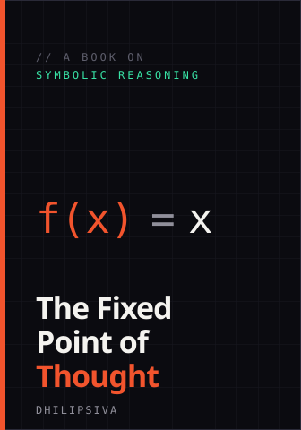

active
axiom
A symbolic-reasoning kernel in Rust that compiles proofs to a 12kB Wasm core. Express invariants as logic; it checks them before they run.
An Optimistic Nihilist who loves Science, Rust, Python, FOSS, WebAssembly, WebRTC, Web3, Distributed Systems, and symbolic reasoning.
Software architect, lifelong builder. I care about correctness, freedom, and code that still makes sense in a decade. Not an entrepreneur — I just want to build the things.
A symbolic-reasoning kernel in Rust that compiles proofs to a 12kB Wasm core. Express invariants as logic; it checks them before they run.
A broker-less peer-to-peer mesh over WebRTC. Nodes find each other and agree directly — no central server, no single point of failure, no rent.
A tiny self-hosting interpreter that evaluates to itself. A teaching toy about fixed points, recursion, and programs that read their own source.

A working book on symbolic reasoning for builders — how logic, recursion, and self-reference become real systems. Equal parts Gödel, Rust, and lab notebook. Drafting in the open.
Long-running thoughts on building, logic, freedom, and the occasional detour into Tamil and philosophy of mind.
Find me where the source lives.